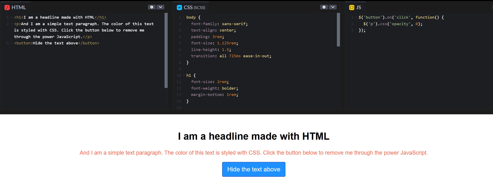

Webdesign
In the course of my studies, I learned the fundamentals of web design by exploring the roles of HTML, CSS, and JavaScript. A helpful analogy we discussed is that HTML acts as the “nouns” of a webpage, providing the basic content and structure; CSS is like the “adjectives,” describing how everything should look; and JavaScript functions as the “verb,” adding interactive elements and dynamic functions to bring the site to life.
We started working with some basic HTML to structure pages, learning how elements like headings, paragraphs, and links define the core content. Next, we added CSS to style our pages, experimenting with colors, fonts, and layouts to refine the visual impression. Finally, we explored JavaScript to understand how to add simple interactions, like responding to button clicks.
For our practical project, we decided to take advantage of a free HTML5 template, which made building and editing the site much easier and allowed us to focus on creativity and usability.